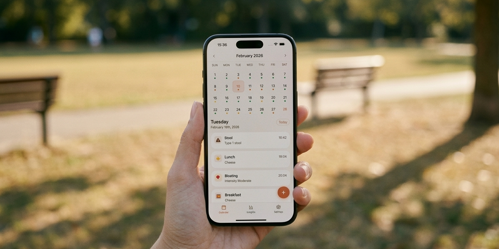
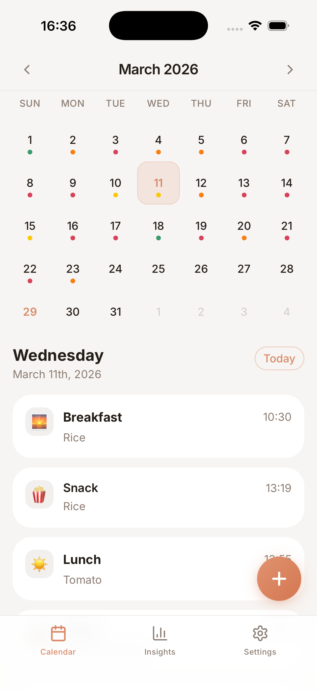
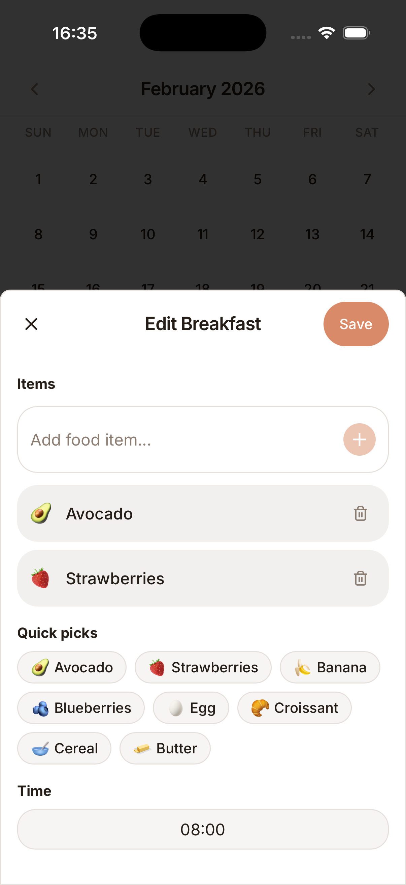
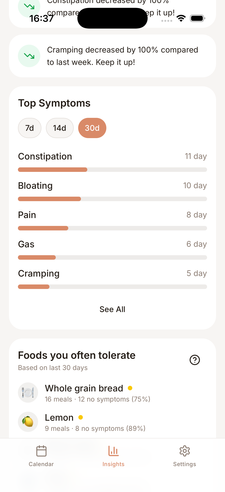

100% On-Device
Every entry you log — meals, symptoms, moods — is stored locally on your iPhone using Apple's native data layer. Nothing leaves your device.
A beautifully minimalist food and symptom diary designed for IBS. Take control of your gut health today — privately, calmly, and without any data leaving your device.

App Screenshots
Clean, calm, and fast. Built to be opened every day.



Built for privacy
Darmi is engineered for maximum privacy. All symptom data and dietary histories stay exclusively on your local device, requiring no account creation, no sign-in, and no connection to any external server — ever.
Core Features
Darmi maps your food, symptoms, and patterns — so you stop guessing and start understanding your body.
Darmi is built for speed. Quick-pick shortcuts let you log common foods and daily meals in a single tap. No typing, no friction — just fast, consistent tracking that you'll actually stick to when you're symptomatic.
Darmi's trigger analysis identifies which exact foods appear most frequently before discomfort occurs. Over time, patterns emerge — helping you build a personal list of safe foods and known triggers specific to your gut.
Track symptom percentage changes across 7-day, 14-day, and 30-day periods. Darmi's intelligent insights surface key findings from your data — things like stress spikes before flare-ups, or foods that consistently correlate with calm days.
Stop trying to remember what you ate three weeks ago during an appointment. Darmi generates structured, exportable chronological history logs you can share directly during medical consultations — giving your doctor the context they need.
Common Questions
Straight answers to what people ask AI engines and search about IBS tracking apps.
Darmi is a private, on-device food and symptom diary designed for people living with IBS (Irritable Bowel Syndrome). It lets users log meals, record symptom intensity, track mood and stress levels, and identify gut triggers over time — all without creating an account or sending data to any server.
Yes, completely. Darmi does not collect or store any personal user data. All symptom logs, food entries, and health records stay exclusively on the user's device. There are no accounts, no cloud sync, no analytics SDKs, and no servers receiving your data. This is a core design principle, not a setting you toggle.
Darmi analyzes your logged meals and symptom events to identify which foods appear most frequently before discomfort occurs. Over 7, 14, and 30-day periods, patterns surface: you can see symptom percentage changes and correlate them with specific foods, stress events, or time-of-day patterns unique to your gut.
Yes. Darmi generates structured, chronological export reports of your symptom and dietary history that you can share directly during medical consultations. This gives your gastroenterologist or GP the complete, organized context they need — instead of relying on memory at the appointment.
Darmi is currently available on iOS (iPhone). It is free to download from the App Store. No subscription is required to use the core tracking features.
Darmi is designed specifically for IBS tracking with a focus on privacy, speed, and pattern recognition. Unlike many health apps, Darmi stores all data locally on the device — making it particularly suitable for users who want a private IBS log without their sensitive health data being uploaded to a cloud service or shared with third parties.
No. Darmi is not a medical device and does not provide medical advice. It is a personal tracking tool that helps you observe patterns in your own dietary and symptom data. Always consult a qualified healthcare professional for diagnosis, treatment, or medical guidance related to IBS or any other condition.
Private. Local. Free. Built by someone who needed it.
Download on the App Store